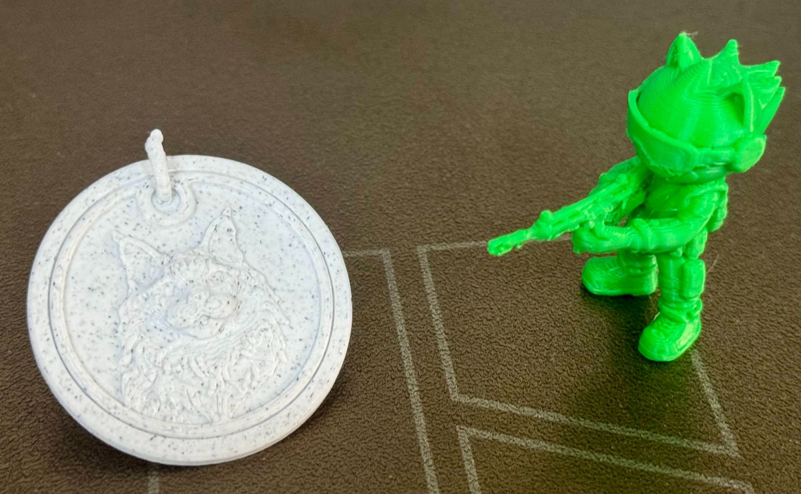
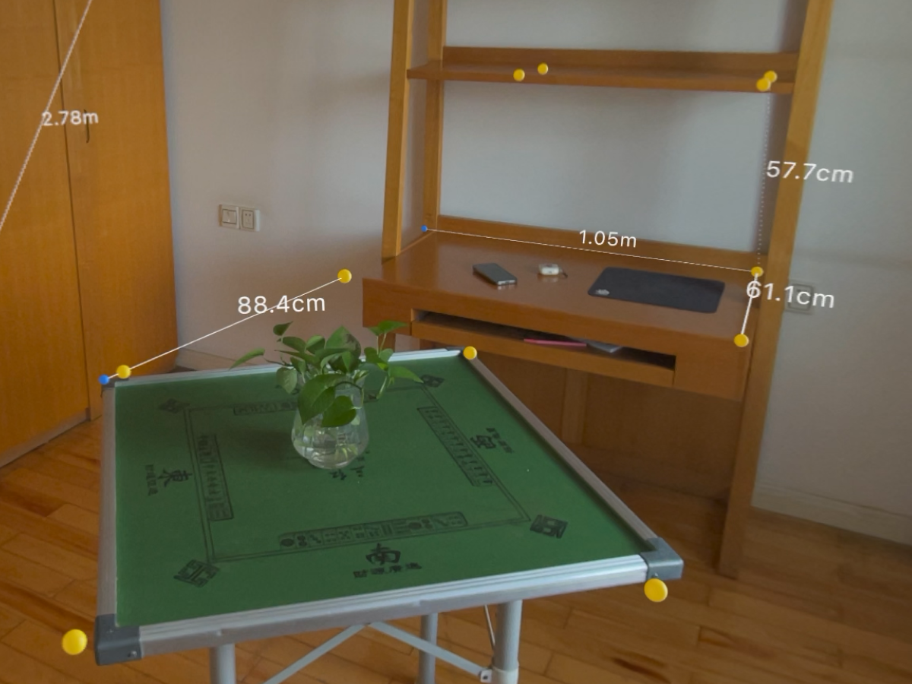
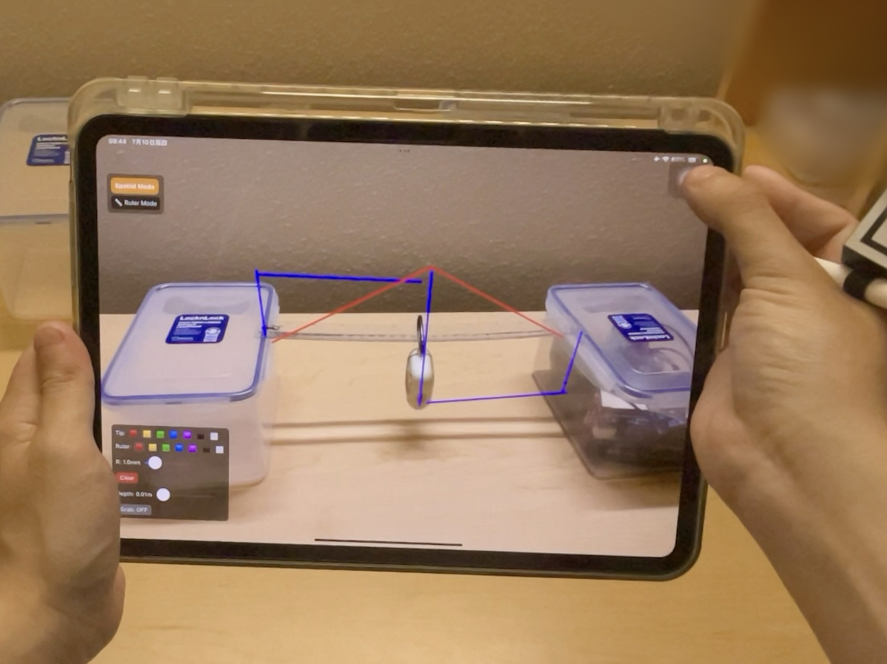
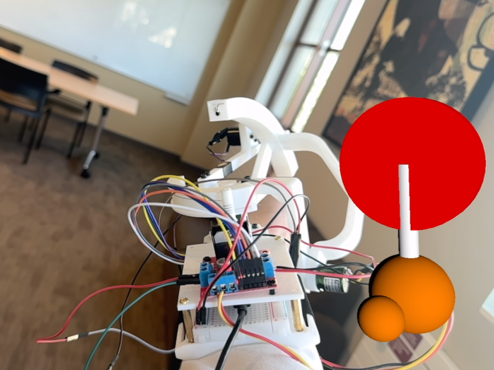
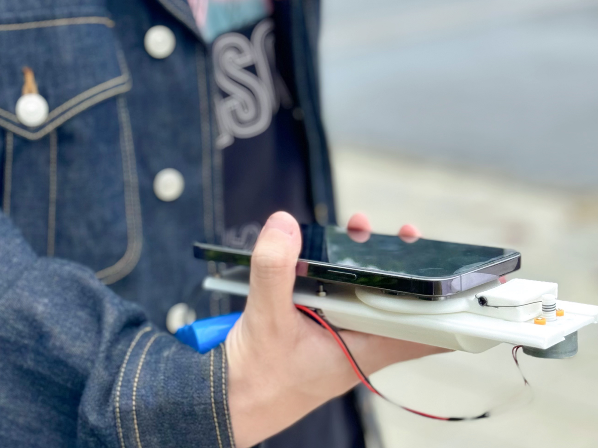

Z. Pan, "Personal 3D Printing without Visual Dependency in the Generative AI Era: Opportunities and Challenges", under review DIS' 26.
Chester's research involed in variaty of Human-Computer Interaction area, and are showcased in HCI venue Conferences.

Z. Pan, "Personal 3D Printing without Visual Dependency in the Generative AI Era: Opportunities and Challenges", under review DIS' 26.

Z. Pan, "rulAR: Spatial Measurement in Indoor Scenes via Intelligent Labeling and Immersive Visualization", in Proceedings of the 2025 International Conference on Human-Engaged Computing (ICHEC 2025), November 21--23, 2025, Singapore, Singapore.

Z. Pan, "mARker: Hybrid-Interfaced Spatial Sketching via iPad AR, Apple Pencil, and an Instantly Crafted Tracker", in Proceedings of the 2025 IEEE International Symposium on Mixed and Augmented Reality Adjunct (ISMAR '25-Adjunct), October 08--12, 2025, Daejeon, Korea, Republic of.

Z. Pan, G. Ge, H. Lu, Z. Meng, H. Wu, Q. Yang, J. Liang, "karP: an experiential prototype for Kinesthetic Augmented Reality on mobile — Playful, Portable, Producible", in Designing Interactive Systems Conference (DIS '25 Companion), July 05--09, 2025, Funchal, Portugal.

Z. Pan, G. Ge, Z. Jiang, Z. Meng, L. Wang, H. Wu, L. Wang, J. Liang, H. Wen, "Tangible Compass: An Affordable and DIY-Friendly Handheld Kinesthetic Device for Haptic Accessible Navigation", in Chinese CHI 2024 (CHCHI 2024), November 22-25, 2024, Shenzhen, China.